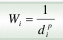
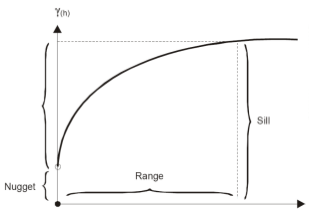

[ Prev ]
[ Index ]
[ Next ]
02 - Interpolace
Created Pondělí 21 února 2011
- lze ji použít pouze pro spojité jevy
- hlavní princip - jevy, které jsou v prostoru blíže k sobě, mají tendenci se časově více podobat, více spolu souvisí a opačně
- hlavní cíl - naměření určého počtu bodů s nadmořskou výškou + odvození neznámech hodnotyí ve všech vybraných místech (každé místo bude mít hodnotu danou měřením nebo odhadem)
- odvozování hodnot uvnitř modelované část z okolních bodů o známé hodnotě
- pozn. extrapolace - odvozování hodnot nadmořské výšky vně modelované oblasti v místech, kde nebyla zaměřena - použití: hydrologické charakteristiky
- využití:
- určení nadmořské výšky z nadmořských výšek ve známých bodech
- určení nadmořské výšky v zadané síti bodů z nadmořských výšek ve známých bodech - griding
- určování souřadnic bodů polév vrstevnic - generování vrstevnic
- zvyšování nabo snižování husototy bodů v gridu - převzorkování
- kvalita výstupu je dána:
- rozložením vstupních bodů (viz. sampling)
- přesností hodnot nadmořské výšky v těchto bodech - sběr dat
- vhodností interpolační metody s ohledem na chování - výběr interpolační metody
- kritéria výběru metody:
- míra s jakou vybraná metoda zohledňuje charakteristické prvky reliéfu
- míra s jakou je schopna se přizpůsobit změnám reliéfu (př. hustotě a pravidelnosti prvků)
- výpočetní náročnost
dělení:
- dle věrnosti k hodnotám vstupních bodů:
- exaktní - zachovává naměřené hodnoty ve známých bodech, př. idw, spline, výsledný povrch přesně prochází vstupními body
- aproximující - nezachováná - neprochází vstupními body, př. griging
- dle počtu bodů vstupujicích do interpolace:
- globální
- vezmou se všechny body a určí se jedna globální funkce, ze které se odvozují hodnoty nodmořské výšky pro jakkýkoliv bod
- používání polynomických funkcí, př. metoda trend
- pozn. změna hodnoty jednoho vstupního bodu ovlivní výsledky pro celé území
- lokalní
- pro odvození n eznámých hodnot se používá omezený počet vstupních bodů
- nutnost správního definování velikosti, tvaru a orientaci okolí, počet vstpních bodů a distribuci bodů
- povrch je interpolován po častech
- vystupní data jsou vyhlazována
- př. metody nejbližších sousedů, IDW, kriging, spline, triangulace
- dle použití náhodného prvku:
- determinické
- neznámé hodnoty je vypočítají pomocí deterministické funkce
- př. IDW, spline
- použití pro přírodní procesy, ikdyž to není podmínou
- stochastické
- založeny na statistickém modelu, který v sobě obsahuje (prostorovou) autokoleraci a apriorní předpoklad nejistoty mezi měřenými místy - prostorová predikce, určení přesnosti předpovědi
- př. kriging
- analýza vstupních dat:
- autokorelace (závislost) - dana musí být závislá, inak nelze sledovat hodnoty - semivariogram
- stacionarita:
- nezávislost na místě měření
- pro ověření stacionality 1. řádu se používá analýza trendu - pokus existuje trend, je to špatně, musí se trend odstanit, aby byla zachována stacionalita prvního řádu
- stacinarita 2. řádu - vnitřní - ověřuje se tak, že se sleduje hodnota nudget efektu - hodnota semiovariogramu v počátku
- normální rozdělení
- pokud data nemají normální rozdělení, je nutné data transformovat, buď histogramem, nebo normal QQ plotem, šikmost, špičatost
Interpolační metody
- 1. Metoda nejbližšího souseda - hledanému bodu se přiřadí hodnota nadmořské výšky nejbližšího známého bodu (používá se zřídka, není to úplně interpolace)====
2. Metoda iverzní vážené vzdálenosti - IDW:
- k určení neznámé hodnoty nadmořské výšky Z v bodě (x,y) používá vážený průměr z hodnot nadmořských výšek bodů ležících do určité vzdálenosti od počítaného bodů
- 
- parametry:
- Wi - váha bodu (funkce, která se se vzdáleností snižuje)
- di - vzdálenost mezi interpolovaným bodem a dataových (= známým) bodem
- p (power) - ovlivňuje rychlost změny váhy
- čím vyšší hodnota (p > 1), tím větší je důraz na bližší body → členitější povrch. ostré vrcholky a opačně
- nižší hodnota (p < 1), tím větší je vliv pro vzdálenější body v okolí → shlazený povrch
- p=0 → výsledný bod je pouze průměrem všech vstupiních bodů
- nejčastěji p=2
- n (počet vstupních bodů)
- počet nejblžších vstupních bodů nebo použití vyhledávací kružnice
- možnsot výběru z oktantů (vybráj jeden nejbližší bod z každé 45° výseče) či směrové vážení (vyhledávací okrub rozdělen na výseše definovaných úhlů a vahami jsou zvýhodněny výseče v určitém směru)
- nevýhody:
- vznik depresí, které se řeší shlazením, ztráta původních hodnot
- nelze interpolovat vrcholy či deprese
- využití: pro analýzy, kde je potřeba hladkosti modelu, př. modelování proudění, eroze, dopravních procesů, hydrologických výpočtů
- metody: Shepardova metoda (Surfer) - využívá metodu nejmenších čtverců; průměrové filtry
3. Spline
- využívá matematicky definovaný křivky - vyberou se segmenty, přibližně stejně velké, měly by obsahovat alespoň 8 bodů
- nejčastěji kubický splajny - principem je spojování dvojic daných bodů segmenty kubické křivky
- výsledný povrch je velice hladký
- každá část povrchu je reprezentována samostatnou polynomickou funkcí
- nevýhody: tvorba lokálních minim a maxim, spline nedokáže udělat ostrý zlom
- povrch musí přesně procházet datovými body - musí mít minimální křivost
- regularizovaný spline (ESRI)
- vyšší váha znamená hladší výsledný povrch
- shlazený, postupně se měnící povrch s hodnotami, které mohou ležet mimo rozsah vstupních dat
- hodnoty >= 0 (0, 0.0001, 0.01, 0.5)
- spline s tenzí (ESRI)
- ovlivňuje tuhost (= napětí) povrchu
- vyšší váha znamená hrubší výstupní povrch
- hodnoty >= 0 (0, 1,5, 10)
- regularizovaný splajn s tenzí (GRASS) - kombinace obou - mohou být nastavené pomocí dvou parametrů:
- tenze (napětí povrchu)
- vlastnost týkající se těsnosti průchodů interpolovanýho povrchu datovými body
- segmentace, anizotropie
4. Kriging
- původně využíván v těžebním průmyslů (autoři Krig, Matheron)
- geostatistické interpolační metody , které určují lokální odhad - výpočet pravděpodobné hodnoty buď v bodě (bodový odhad) nebo v relativně malé ploše (blokový odhad)
- odhady jseou počítány pomocí vážených lineárních průměru → pro každé místo je optimalizována soustava vah tak, aby měl výsledný odhaz co nejmenší chybu
- váhy jsou závislé:
- na vzdálenosti mezi měřenými body (jako u IDW)
- prostorovém vztahu mezi měřenými body
- hodnotách daných semiogramem
- pro minimalizaci chyb je nutné provést strukturální analýzu a popsat vztahy ve zkoumaném poli → tz. sestavit empirický semivariogram
- semiovariogram
- využívá lineární vážené hodnoty, poskytuje popis prostorové variability → empirický semivariogram je pro určení hodnot odhadu ve všech směrech a všech vzdálenostech prokládán vybraným modelem (funkcí), který nejlépe vystihuje prostorou korelaci
- umožňuje kvantifikace korelace mezi 2 proměnnými
- 1. výpočet vzdáleností
- výpočet vzdálenosti mezi jednotlivými páry bodů je založen na Euklidovské metrice (vzorec viz. skripta)
- čím víc pozorování, tím víc lokací párových bodů → nezvladatelné
- → řešením je seskupování:
- určení tříd vzdáleností
- ale jestliže je vzdálestno příliš velká, místní působení autokorelace může zůstat skryto
- naopak jestli je vzdálenost malá, mohou existovat třídy bez zastoupení a tím empirický semivariogram zkreslit
- nejlepší je, když jsou body rovnoměrně rozloženy
- 2. výpočet semivariace - vzorec viz. prezentace
- 3. tvorba empirického semivariogramu
- získané hodnoty semivariace jsou vyneseny do (empirického) semivarogramu
- empirické hodnoty vykreslené v semivariogramu se nazývají shluk (mračnp)
- 4. proložení funkcí
- pužití teoretického semivariogramu
- výběr funkce (= modelu) teoretického semivariogramu = křivka kterou proložím množstvím bodů: sférický, lineární, exponenciální, gaussovský kruhový
- obecně platí: čím lépe vystihuje funkce empirický průběh, tím přesnější je prostorová predikce
- vybraná funkce by měla nejlépe vystihovat průběh prostorové korelace
- 5. určení parametru funkce

- sill (práh) - rozptyl (semivariace), pokud existuje část s lineárním průběhem → hodnoty variace se nemění
- range (rozsah) - vzdálenost, ve které semivariace dosáhne prahové hodnoty (přestane působit), vyjadřuje míru korelace uvnitř množity dat (velká korelace → vysoká korelace a naopak)
- nugget effect (efekt počátení hodnoty) - v nulové vzdálenosti bydu by měla být hodnota autokorela nulová
5. Trend
- používat ji nebudeme
- interpolacepovrchu polynomickou funkcí, tzv. trendem
- příklad globální metody, nikdy neprochází vstupními body - výsledný povrch hladký, původní a odhadnuté hodnoty mají ce nejmenší odchylky
- lineární rovnice (lineární regresní model - polynom 1. rádu) vyjadřeje nakloněný plochý povrch → z=a+bx+cy
- kvadratická rovnoce (polynom 2. řádu) popisuje mírně zvlěnný povrch s jednoduchými vrcholy a údolími → z=a+bx+cy+dx2+exy+fy2
- zvyšováním stupně polynomu lze vystihnout složitější tvary, extrémní povrchy
- používají jen do 3.tího řádu
- problém v okrajových oblastech
Backlinks: